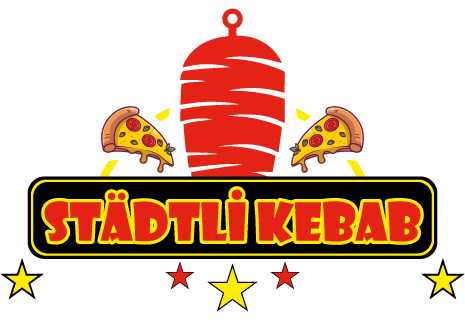
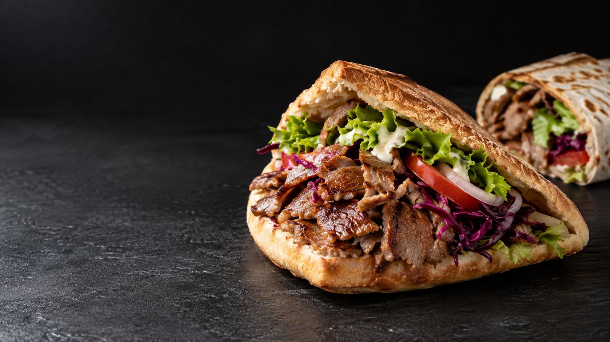
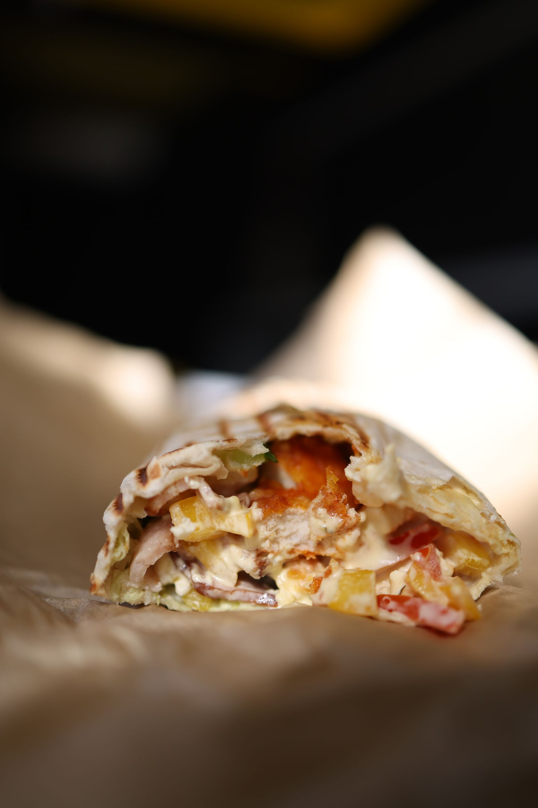

Kebap im Taschenbrot
01Knuspriges Taschenbrot, herzhaft gefüllt. Ein Klassiker, der einfach immer passt.

Jetzt bestellenALTSTÄTTEN · TROGENERSTRASSE 36
Knuspriges Brot. Herzhaftes Fleisch. Dein Lieblingsbissen.
Kebap und Dürüm mitten in Altstätten.

SymbolbildDIE KLASSIKER. DEINE FAVORITEN.
Knuspriges Taschenbrot, herzhaft gefüllt. Ein Klassiker, der einfach immer passt.

GUT GEROLLTDünnes Fladenbrot, gerollt und voller Geschmack. Dein Lieblingsessen auf die Hand.
Lieber etwas anderes?
Pizza, Pide, Burger und vegetarische Gerichte findest du ebenfalls auf unserer Speisekarte.
DEIN PLATZ IM STÄDTLI
Für die Mittagspause, den Feierabend
oder den Hunger nach dem Ausgang.